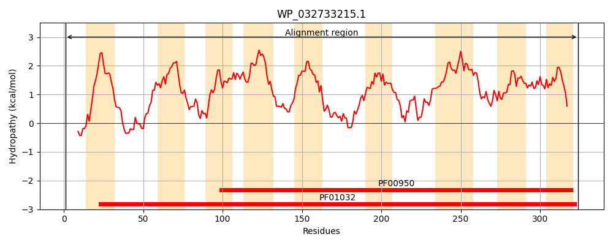
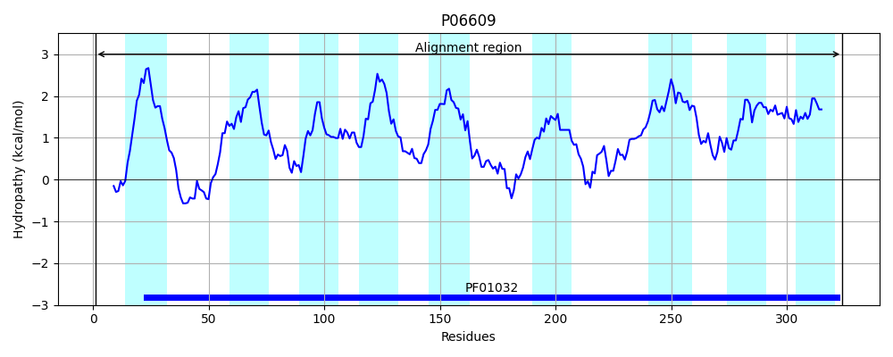
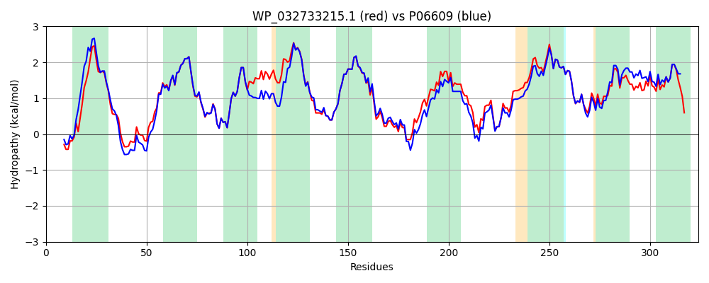

Hit Accession: P06609
Hit TCID: 3.A.1.13.1
Hit Description: gnl|BL_ORD_ID|8377 gnl|TC-DB|P06609|3.A.1.13.1 Vitamin B12 transport system permease protein btuC - Escherichia coli.
Mach Len: 324
e:0.000000
Query TMS Count : 9
Hit TMS Count: 9
TMS-Overlap Score: 8.250000
Predicted Substrates:CHEBI:17439;cyanocob(III)alamin
BLAST Alignment:
Score: 1419 , Bit scores: 551 bits, E-value: 0.0e+00, Alignment length: 324, Percentage identity: 82
Query: 1 MLTLAHLQQRRSRRWLFGLTLLLLVTLLVSLCAGDQWIPPGEWLSAKGQLFIWQIRLPRTLAVVLVGAALALSGAIMQALFENPLAEPGLLGVSNGAGVGLIAAVLLGKGVLPGWALGLCAILGALLITFILLRFARRHLSTSRLLLAGVALGIICSALMTWAVYFSTSFDLRQLMYWMMGGFGGVDWQQLWLMIALLPVLCWVCLQSQPLNLLALGEVSARQLGLPLWLWRKLLVVATGWLVGVSVALAGAIGFIGLVIPHILRLCGLSDHRVLLPACMLAGASALLGADIIARLALSAAELPIGVVTATLGAPVFIWLLLRS 324
MLTLA QQR++ RWL L++L+L+ LL+SLCAG+QWI PG+W + +G+LF+WQIRLPRTLAV+LVGAALA+SGA+MQALFENPLAEPGLLGVSNGAGVGLIAAVLLG+G LP WALGLCAI GAL+IT ILLRFARRHLSTSRLLLAGVALGIICSALMTWA+YFSTS DLRQLMYWMMGGFGGVDW+Q WLM+AL+PVL W+C QS+P+N+LALGE+SARQLGLPLW WR +LV ATGW+VGVSVALAGAIGFIGLVIPHILRLCGL+DHRVLLP C LAGASALL ADI+ARLAL+AAELPIGVVTATLGAPVFIWLLL++
Sbjct: 1 MLTLARQQQRQNIRWLLCLSVLMLLALLLSLCAGEQWISPGDWFTPRGELFVWQIRLPRTLAVLLVGAALAISGAVMQALFENPLAEPGLLGVSNGAGVGLIAAVLLGQGQLPNWALGLCAIAGALIITLILLRFARRHLSTSRLLLAGVALGIICSALMTWAIYFSTSVDLRQLMYWMMGGFGGVDWRQSWLMLALIPVLLWICCQSRPMNMLALGEISARQLGLPLWFWRNVLVAATGWMVGVSVALAGAIGFIGLVIPHILRLCGLTDHRVLLPGCALAGASALLLADIVARLALAAAELPIGVVTATLGAPVFIWLLLKA 324 | Protein Hydropathy Plots: |
|---|
|  |  |
Pairwise Alignment-Hydropathy Plot:
|
|---|
|  |